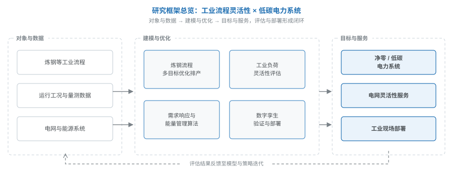

Research
围绕工业流程与低碳电力系统的协同优化，研究从长期转型规划、短期生产调度到电网灵活性服务的多尺度决策。以电气化炼钢和氢基钢铁流程为主要应用场景。
研究方向
钢厂低碳转型规划
联结长期投资与短期运行，在成本、减排与区域能源条件之间寻找可行的钢厂转型路径。
炼钢流程优化调度
利用资源—任务网络与多目标优化，协调电弧炉、制氢、储氢与可再生能源，兼顾生产约束、成本与间接排放。
工业灵活性与多能源协同
评估工业负荷与混合储能的调节能力，研究需求响应、能量管理及电网灵活性服务。
研究框架与方向图示



代表性工作
每项工作先展示研究问题与方法；展开可查看原有算例结果和图示。算例收益取决于设备配置与比较基准，不代表一般性能保证。
钢厂低碳转型路径规划
如何在投资成本与减排目标之间选择转型路径？联合优化年度投资和代表场景的小时运行，比较 EAF-only 与 EAF+DRI 路线。
算例结果与图示
在区域能源条件约束下联合优化年度投资决策与代表场景的小时运行，以 GDP 模型联结投资与运行，并通过联合聚类得到 8 个代表场景。路径选择需在成本与减排之间权衡：EAF+DRI 路线相对 EAF-only 路线，累计折现总成本增加 18.1%，累计运行碳排放降低 41.0%；若自 2033 年起氢价额外下降 30%，全氢路线的采用时点由 2048 年提前至 2040 年。


电弧炉炼钢多目标调度
如何兼顾生产工期、用电成本和间接碳排放？扩展 RTN 模型并结合多目标优化，评估可再生能源与电池储能对生产调度的影响。
Su P, Zhou Y*, Wu J. Multi-objective scheduling of a steelmaking plant integrated with renewable energy sources and energy storage systems: Balancing costs, emissions and make-span. Journal of Cleaner Production, 2023, 428: 139350. DOI ↗
算例结果与图示
面向电弧炉—脱碳—精炼—连铸工序构建扩展资源—任务网络（RTN），统一描述生产、电能消耗与间接碳排放约束，并以 NBI 法求解成本—工期帕累托解集。在光伏 10 MW、风电 10 MW、储能 5 MW / 20 MWh 的算例中，相对 785 min 固定排产基准，1430 min 联合调度方案使电费与排放成本降低 68.5%、间接排放降低 83.5%；更宽松的工期释放调节灵活性，储能进一步降低成本。


氢基钢铁流程协同调度
如何在既有设备配置下改善运行经济性？分别建立制氢、储氢、直接还原和电弧炉子过程的 RTN 模型，再用边界依赖约束集成。
Su P, Zhou Y*, Li H, Perez HD, Wu J. Cost-effective scheduling of a hydrogen-based iron and steel plant powered by a grid-assisted renewable energy system. Applied Energy, 2025, 384: 125412. DOI ↗
算例结果与图示
以制氢、储氢、直接还原与电弧炉工序为对象，集成 RTN 与边界依赖约束，保障六批次生产在工艺上可行。制氢功率调节与电弧炉批次移时互补，储氢罐作为缓冲协调日前电价与风电出力波动。在成本最优方案下，总运行成本由 533.8 k£ 降至 221.1 k£，降幅 58.58%；成本项包含购电、弃风惩罚与间接排放。


研究对象：低碳钢厂能量与物料流

科研项目
SUSTAIN Manufacturing Hub（SUSTAIN 制造中心）
英国工程与自然科学基金会资助项目。负责子课题 1「基于炼钢流程机制的钢厂多目标日前排产优化」，开发电炉炼钢流程能量管理算法并协助部署于钢厂数字孪生测试平台；相关成果获项目年会最佳海报奖。
FlexCHESS · 基于互联互通的混合储能系统的灵活性服务
研究工业流程灵活性与储能系统结合的混合储能系统及其在电网灵活性服务中的应用；相关成果在 IEEE PES ISGT Europe、IEEE EI² 会议作口头报告。 项目链接
MC2 · 信息物理融合的城市能源系统分区协调控制
负责工业负荷灵活性评估及参与电网需求侧响应服务潜力研究；与 SUSTAIN 合作开发面向炼钢厂智能灵活运营的数字孪生方法。 项目链接
方法与技术
- 资源—任务网络（RTN）与流程约束建模
- 多目标优化与混合整数线性规划（MILP）
- 工业负荷灵活性评估与需求响应
- 能量管理、混合储能与数字孪生